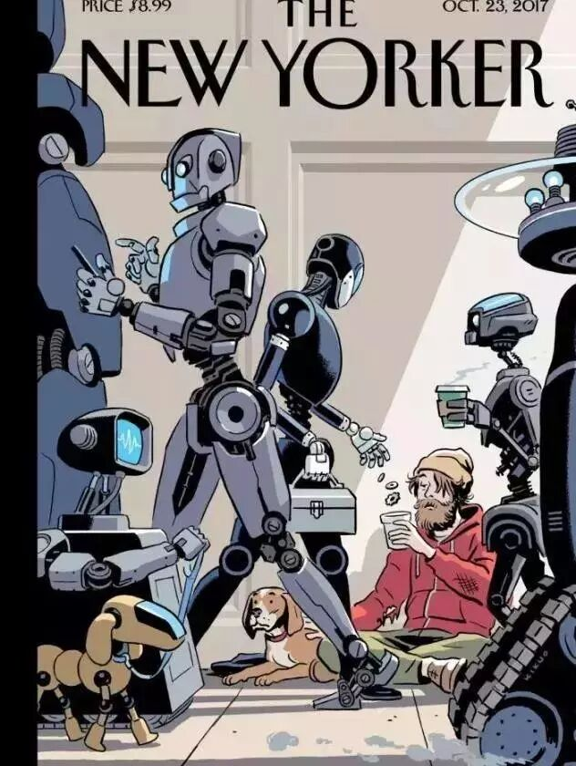
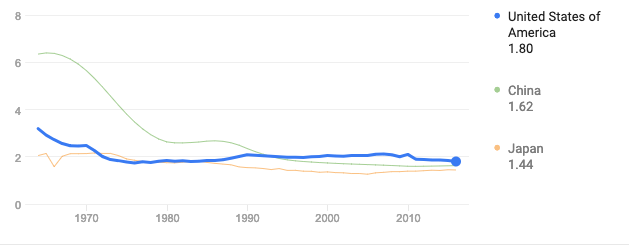

1.
人工智能导致的大规模失业可能要比我们想象得来得迟一点。
人类曾经经历过一次大规模的机器取代人力的浪潮。
在1940年的美国，大大小小的机器大部分由电力驱动，替代了大多数危险的工厂工作，比如1890年的钢铁工人。
然而即使机器已经如此普及，它所替代的人力还是过了几十年才慢慢退出了历史舞台。
制造业的劳动人口比例在1953年才达到了30%的顶峰，之后开始缓慢下降。在1980年之后下降的很快，主要是因为机器替代了人工。
目前我们还没有看到人工智能大规模地替代人力的工作。
自动驾驶，AI语音客服，无人超市等将会取代司机，人工客服，营业员等人力工作的技术还很不完善。乐观一点的话，至少还要10-20年才能出现类似于“街上的车辆大部分是自动驾驶汽车，AI语音客服可以解决99%以上的问题，超市里基本没有售货员”这样的时代。
也就是说现在离当年的1940年还有10-20年，还处于同期的1920-1930年的时期。这些对应岗位的淘汰则离1980年还有50-60年。
至于今天从事软件以及人工智能行业的人，则更加不用担心了。毕竟当年做着类似事情的那些机械工程师，一直到现在仍然有不少工作机会。
2.
曾经在美国，主流的文化是女性就应该在家里照顾孩子。
1945年战争结束，在此期间养一群孩子是一种社会风气。到了1960年，原来的美国厨房已变得现代化了。
由于家庭主妇在家庭琐事上可以花更少的时间，所以也就有了更多时间照顾小孩，生育率从1945年的2.4%上升到1947年的3.3%，接着缓慢上升到1956年的3.8%。
在1960年，60%进入大学的女性在完成大学学业之前会辍学结婚，这种常见的做法体现了当时的流行文化，它认为美国妇女应当为了稳定而承担家庭责任。
然而随着女性受教育程度的提高以及她们的劳动参与率提升，养孩子不再是她们的生活重心。
“黄金年龄”（25~54岁）的女性劳动参与率从1948年的34.9%上升到1964年的44.5%，之后再1985年达到69.6%， 然后在1999年达到峰值76.8%，之后是小幅缓慢下降，2014年为73.9%。
女性的生育率在1970年下降到2.4%，2016年则是1.8%。
2010年中国统计局的数据，中国的总劳动参与率为80.4%， 女性的劳动参与率为75.2%。因此中国的女性摒弃以孩子为重的文化也就不奇怪了。中国的生育率下降到跟美国，日本同一水平似乎是一个水到渠成的结果。

美国，中国，日本的生育率
3.
美国的经济增长并不是一成不变的，它也曾经经历了类似中国的经济腾飞时期。1920年之前美国的经济稳定增长但相对缓慢，1920年才开始腾飞，一直到1970年开始放缓。
中国自2018年开始经济就已经结束了高增长的时期，参考一下别的国家的发展历史，会更加有助于了解我们国家未来的走向。
在这本罗伯特·戈登写的《美国增长的起落》书中，详细地陈述了美国经济增长过程中生活各个方面的变化。
书中陈述的曾经的美国要比现在的中国落后的多，他们曾经没有抽水马桶，没有清洁的用水，没有电。他们曾经是一个农业为主的国家。如今美国的繁荣，其实也是一步一步发展出来的结果。
而中国，正走在同样的路上。